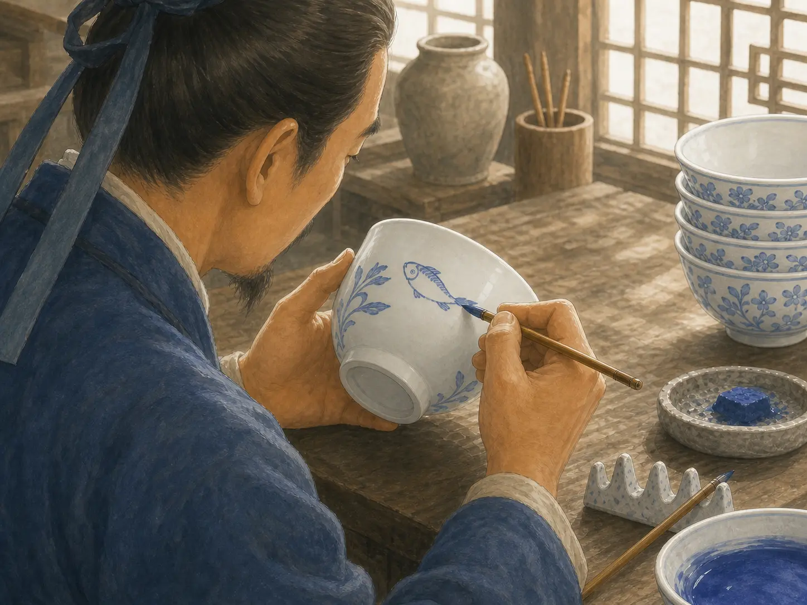
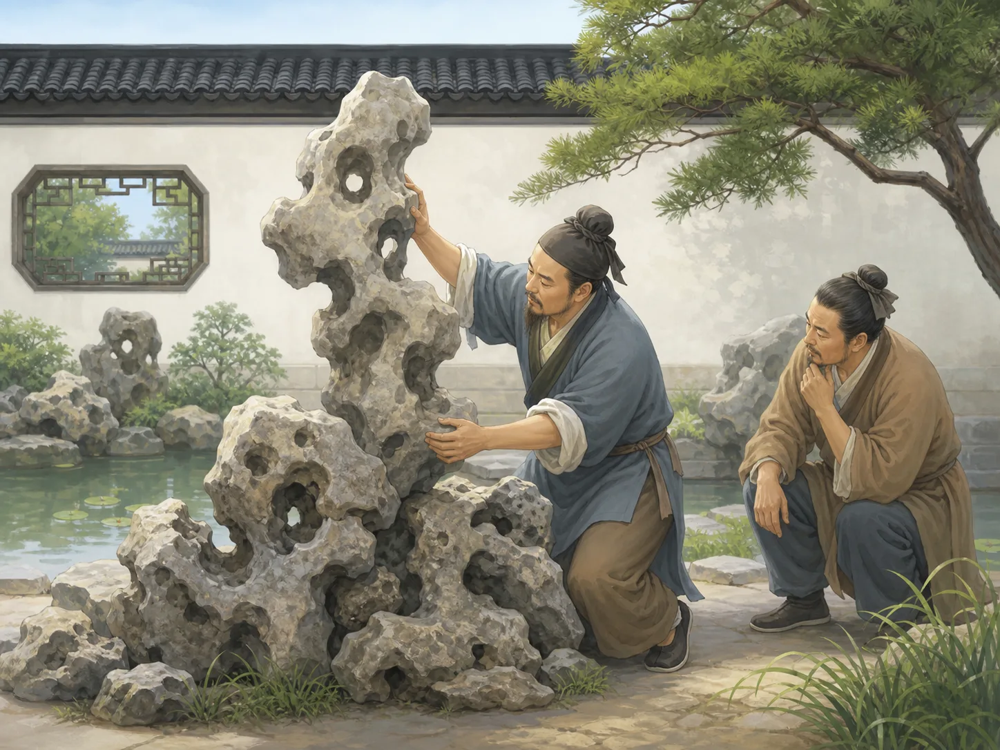

慢慢做好一件事：中国的工匠精神
Doing One Thing Well, Slowly
Page 1
有些人没有留下很多名字，却留下了很厉害的本事
Some Makers Left Little Behind but Their Skill
Some craftspeople left only a small trace in books, but their bridges, bells, and objects are still here.
古代中国留下来很多了不起的东西：桥、钟、瓷器、园林。可有时候，人们记住了作品，却不一定记住每一个工匠的名字。
这听上去有点可惜，可也很能说明一件事：有些人把自己最厉害的本事，留在了手里的活儿里。你不知道他长什么样，也不知道他平时说话快不快，可你还能从作品里看见他的认真。
这也是很多人说“工匠精神”时，最想说的地方。先别急着出名，先把事情做好。
Ancient China left behind many amazing things: bridges, bells, porcelain, and gardens. But sometimes people remember the work and do not remember every craftsperson's name.
That may sound a little sad, but it also shows something important. Some people left their best skill inside the thing they made. You may not know what they looked like or how they spoke, but you can still see their care in the finished work.
That is one big idea inside what people call the spirit of craftsmanship. Do not rush to be famous first. First, do the work well.
Page 2
一只碗好看，常常是因为有人练了很多很多次
A Beautiful Bowl Often Means Years of Practice

A fish, a leaf, or one blue line may look easy, but it often comes from a very long time of practice.
想想景德镇的瓷器。一个人学做瓷器，往往要先学怎么拉泥，怎么让手更稳，再学怎么画线、上色、烧窑。
有时候，一位画瓷器的师傅会很多年都在练同一种线条、同一种花叶、同一种鱼。练到后来，手一落下去，就知道这一笔该多轻、多快、多弯。
所以你看到一只很好看的碗，常常不只是看见一只碗。你也在看很多清晨和傍晚，很多次练习，慢慢堆出来的本事。
Think about Jingdezhen porcelain. A person learning to make it may first learn how to shape clay, then how to steady the hands, then how to paint lines, add color, and fire the kiln.
Sometimes a porcelain painter spends years practicing the same line, the same leaf, or the same fish. After enough practice, the hand already knows how light, how quick, and how curved the stroke should be.
So when you look at a beautiful bowl, you are often seeing more than a bowl. You are also seeing many mornings, many evenings, and many rounds of practice built into one object.
Page 3
石头堆得像天然长出来的一样，其实更难
Making Stone Look Natural Can Be Harder Than It Seems

Garden rocks may look effortless, but the builder has to understand shape, balance, and weight.
苏州园林里有很多假山。看起来像是石头自己长成了一个小山坡，其实背后全是人的眼力和手艺。
工匠要看石头的形状，要想哪一块放前面，哪一块压下面，还要让它站得稳，又不能看起来太死板。最厉害的时候，是你几乎看不出“做过”的痕迹，只觉得它本来就该在这里。
这也是工匠精神很有意思的地方。不是把“我好厉害”挂在嘴边，而是让东西自己慢慢把本事说出来。
Suzhou gardens are full of rockeries, little mountains made from stone. They can look as if the rocks simply grew that way by themselves, but in truth they depend on human eyes and human skill.
The builder has to study each rock. Which one should stand in front? Which one should take the weight underneath? How can the whole pile stay balanced without looking stiff? At the best moment, you almost stop noticing that it was built at all. It simply feels as if it belongs there.
That is another interesting part of craftsmanship. The maker does not need to shout, "Look how skilled I am." The finished thing quietly says it for them.
Page 4
最要紧的，不是快，是肯一直练下去
The Important Part Is Not Speed but Staying With It
今天，人们说“工匠精神”，常常不是只在说古代的工匠，也是在说一种做事的样子：不怕慢，肯反复练，愿意把一件事一点一点做得更好。
你不一定要去造桥，也不一定要去烧瓷。画画、弹琴、做木工、写字，甚至系鞋带、学投篮，都有一点这个味道。先别急着一下子变厉害，先愿意认真做很多次。
Today, when people talk about the spirit of craftsmanship, they are usually not speaking only about ancient makers. They are also speaking about a way of working: do not fear slow progress, keep practicing, and be willing to make one thing a little better each time.
You do not have to build a bridge or fire porcelain for this idea to matter. Drawing, music, woodworking, handwriting, and even learning to tie your shoes or shoot a basket all can hold a little of the same spirit. Do not rush to become amazing in one jump. Be willing to do something carefully many times.
小结
In Summary
工匠精神不是一句很大的口号。它更像一种安安静静的劲头：肯练，肯改，肯把一件事慢慢磨好。
所以孩子看到一只漂亮的碗、一座稳稳的桥、一座像天然长出来的假山时，也是在看见很多人用时间和耐心做出来的本事。
The spirit of craftsmanship is not only a big slogan. It is more like a quiet kind of strength: keep practicing, keep fixing, and keep making one thing better little by little.
So when a child sees a beautiful bowl, a steady bridge, or a rock garden that looks almost natural, the child is also seeing what time and patience can do in skilled hands.